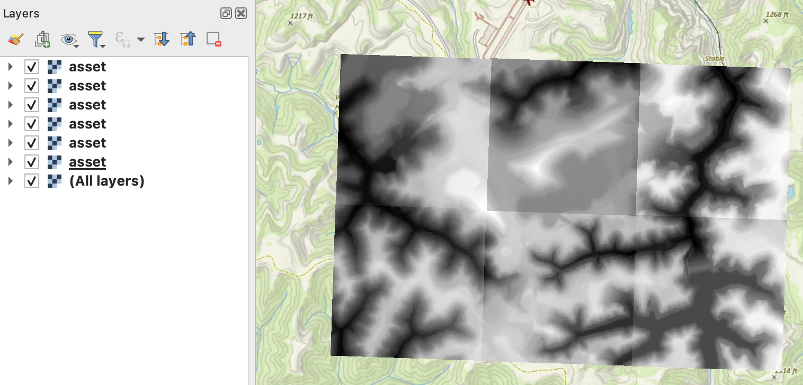

Using STAC API with QGIS
Minimum Requirements: QGIS 3.0.0, recommended >= QGIS 3.38.X
*Note: Due to workshop locale restraints, it is not possible to perform this exercise. Below is just primer I am providing for anyone who wants to use this open Github Page or for you to continue working on your own time/machines.
I like to make sure my Browser in QGIS has a view items set up.

Browser Panel
- Add relevant directories (e.g., Downloads, Documents, etc)
- Add STAC Connections
- Name kyfromabove
- API URL
https://spved5ihrl.execute-api.us-west-2.amazonaws.com/
- REST Servers
- kyraster
https://kyraster.ky.gov/arcgis/rest/services/ - kygisserver
https://kygisserver.ky.gov/arcgis/rest/services/WGS84WM_Services/
- kyraster
Toggle open kygisserver under ArcGIS REST Servers, scroll towards the bottom and look for Ky_TCM_Base_WGS84WM.
Toggle open, right click on layers, add to map. Optionally, in the Layers panel, right click and save as a layerfile locally to use in future projects.
Plugins and Connections
-
Lat Lon Tools - quickly capture extent coordinates

-
STAC API Browser
Set up STAC Connections
- In Browser panel, right click STAC
- Add Connection

- Connection Name - kyfromabove
- URL -
https://spved5ihrl.execute-api.us-west-2.amazonaws.com/
At this point you have all the relavent connections, services, and layers.

Add STAC Data
Zoom to a location of interest on the map. Eventually, you may need to zoom in or out to get an appropriate query result from the API Browser.
I have randomly zoomed to an airport in Martin County (easter Kentucky). FYI, using the Lat Lon Tools I quickly grabbed my extent. -83.44882668,37.26136889,-82.05662517,38.27153324
STAC Browser API Plugin
- Make sure the kyfromabove connection is selected.
- Click Fetch Collections.
- Click on the Digital Elevation Model Phase 3 so that it is selected
- For extent, click Map Canvas Extent
- Scroll down, click search
Depending on your internet connection, the seach query should be quick (seconds).

I like to add all assets footprints, provided the results are 10 or less. This way, I can see which IDs in the search results match up to the footprints in the map.
In the STAC Browser window:
- click on an asset you want to use
- Check add layer to the map.
- Click Add selected asset as a layer

Repeat this for your area of interest. I have using 6 assets, making a 3x2 grid. N111E408-410 and N112E408-410. Any more than this, I would recommend using the python terminal in qqis to search the API to add layers.

Now what? We don't want to analyze the tiles individually, but as a group. Solution. Build a virtual raster.
- In the processing toolbox, type Build Virtual Raster
- Double Click the tool under GDAL
- For input layers, click on 3 dots
- Select the six layers we added
- Click the back arrow at top left
- If no other changes needed, click run

The benefit of mosaic this way is that you avoid the need to download individual tiles. You create a virtual raster from streaming COGs, and export virtual raster locally.
Play around with different processing tools. For some, like the Whitebox Geotools Plugin, you will need to export your virtual raster to a local directory.